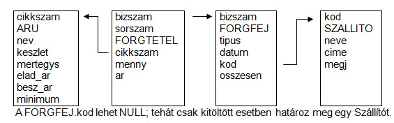
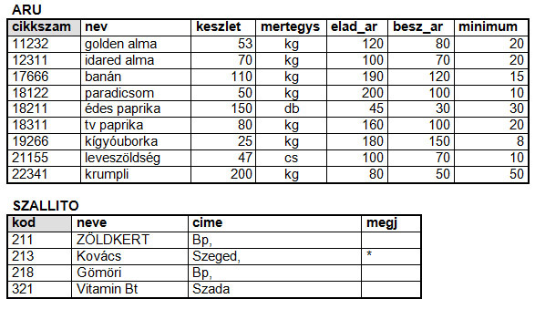
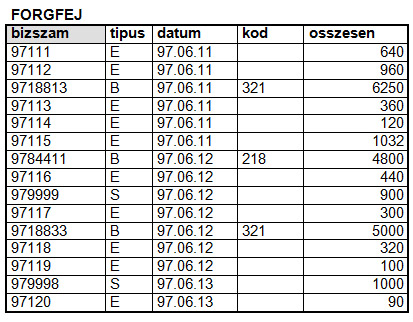
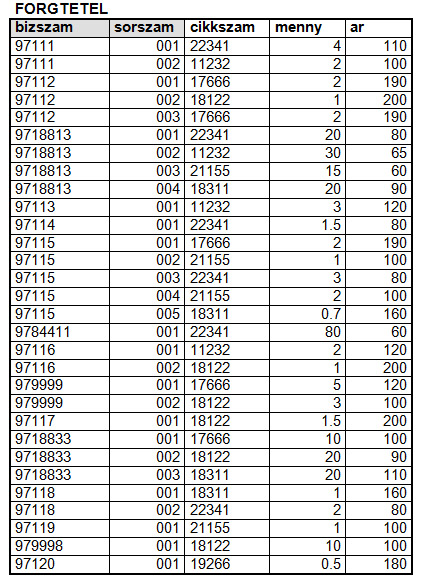

8.5. Zöldséges
Ismertetés
Képzeljük el egy zöldséges forgalmának nyilvántartását. A zöldséges naponta többször elad, beszerez vagy selejtez az áruiból, és minden kimutatása ezen háromféle forgalom szerint bontott. Biztos van áru- és szállítótörzse, de a vevőket nem regisztrálja.
Az adatbázis
ÁRU {cikkszám, név, elad_ár, besz_ár, készlet, mért_egys, minimum}
SZÁLLITÓ {kód, ...}
Az ÁRUban kétféle ár szerepel, a beszerzési ill. az eladási ár. Bármely cikk esetén minden újabb beszerzésnél megváltozhat a készlethez tartozó súlyozott átlagár, melynek hatására a kereskedő átírhatja az egész készlet eladási árát is. Mivel az ilyen árváltozás zöldség-gyümölcs esetén gyakori (akár naponta többször is előfordulhat), ezért a pillanatnyi árat eladás ill. selejtezés esetén inkább eltesszük.
Nézzük meg, mit kell letárolni a 3 típusú forgalom bejegyzésekor:
ELADÁS {mikor, miből, mennyit, mennyiért(elad_ár)}
BESZERZÉS {mikor, miből, mennyit, mennyiért(input), kitől}
SELEJTEZÉS {mikor, miből, mennyit, mennyiért(besz_ár)}
Vegyük észre, hogy a 3 tábla szerkezete szinte megegyezik, a beszerzésben van eggyel több oszlop. Ilyenkor lemondunk az alegyedek létrehozásáról, készítünk egy közös forgalom-táblát, melyben minden oszlopot megtartunk, legfeljebb nem mindegyiket kell majd kitölteni, de akkor jegyezni kell, milyen típusú forgalomról szól az aktuális tétel.
FORGALOM {típus, kelt, cikksz, menny, ár, kód}
A típus 1 katakteren lehet E / B / S (mint eladás /
beszerzés / selejtezés). A szállító kódját csak beszerzés esetén
kell kitölteni.
Figyelem: az ár típustól függően: elad_ár / input / besz_ár.
A Forgalomnak nincs kulcsa. A tulajdonságok semmilyen kombinációja nem jó kulcsnak. Ilyenkor generálhatunk minden tételnek egy azonosítót, de bizonylatolás esetén a fej-tábla sorai kapjanak bizonylatszámot, és a tétel-tábla sorait bizonylatszámon belül sorszámozzuk majd. Sorszámozzuk, mert ilyen forgalomnál elképzelhető, hogy egy bizonylaton belül több tétel is ugyanolyan áruról szól!
Végül azért leírjuk, mely tulajdonságok fognak a fejbe, és melyek a tételekbe kerülni:
FORG_FEJ {bizszám, típus, dátum, kód, összesen}
FORG_TÉT {bizszám, sorszám, cikkszám, menny, ár}
A FORG_FEJ.összesen egy számított mező; a hozzá tartozó tételek menny és ár mezői szorzatának az összege. Mivel pénzmozgás van mögötte, akár kerekítve, szokás tárolni.
Itt az ideje archiválásról gondoskodni ilyen méretű forgalom (tételszám) esetén. Érdemes például havonta zárni, és a havi forgalom-táblákat átnevezve elrakni (akár másik könyvtárba, hogy csak lekérdezhetők legyenek és már nem karbantarthatók). A forg_fej ill. forg_tét táblaneveket hosszabbítsuk meg a hónap (vagy év.hónap) 2-karakteres (vagy 4-karakteres) jelével.
Kapcsolati ábra
Mintasorok



Olvassunk ki eseményeket a mintasorokból!